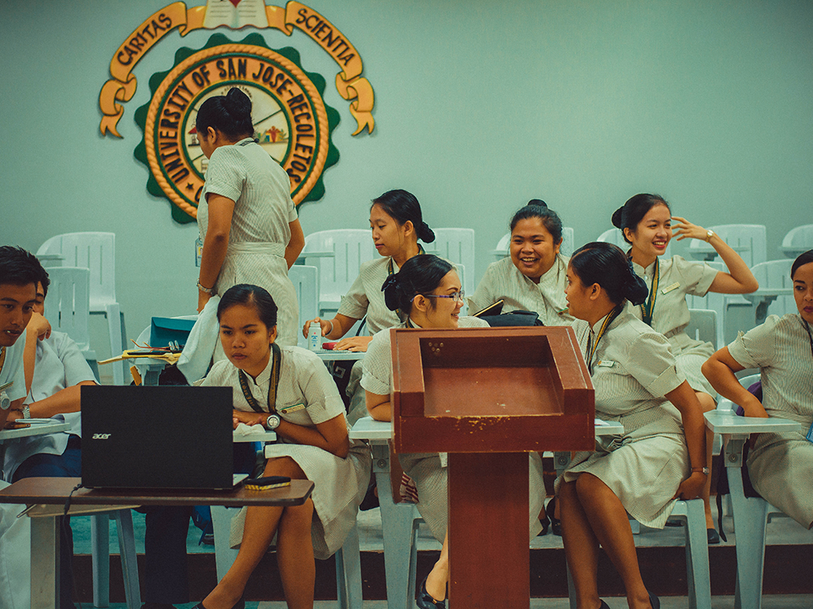
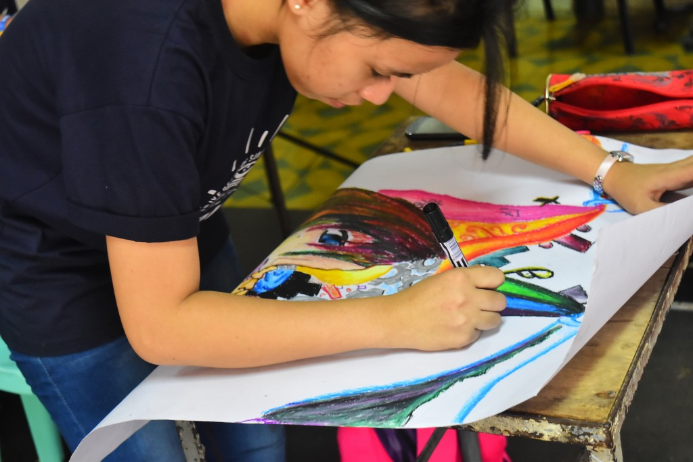
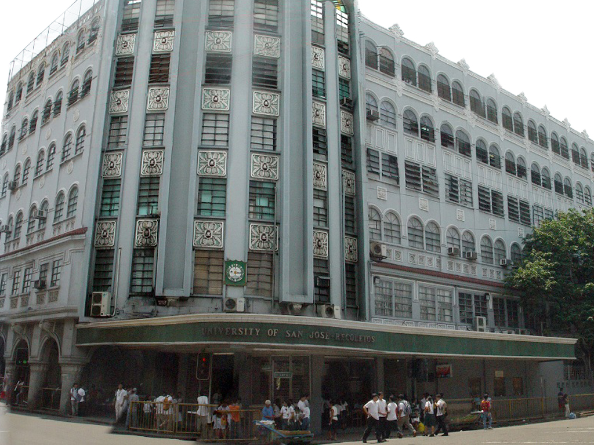
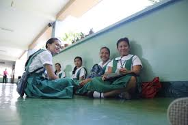
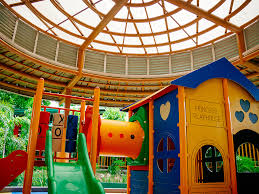

The School of Allied Medical Sciences has adopted an Open Admission, Strict Retention and Promotion Policy in order to inspire the clientele from the Visayas and Mindanao regions. It is committed to produce globally competent nurses who shall make a big difference in the Nursing Profession.
_______________________________________________________________
PROGRAMS
What USJ-R offers
______
SCHOOLS
The University is made up of twelve degree-granting, academic schools. While each school has its own personality and area of expertise, they frequently work together to offer interdisciplinary degree programs and undertake complex research.
School of Allied Medical Sciences

School of Arts and Sciences

School of Business and Management

School of Computer Studies

School of Education
School of Engineering
School of Law
ETEEAP

RITTC
SENIOR HIGH SCHOOL
JUNIOR HIGH SCHOOL

ELEMENTARY SCHOOL
